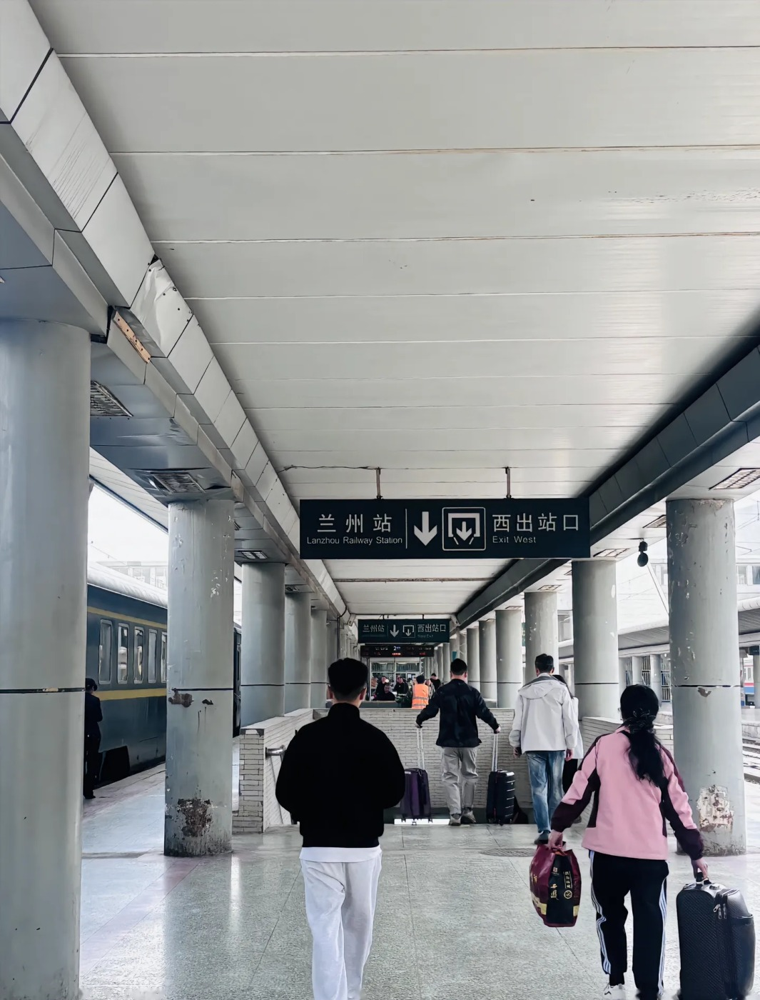
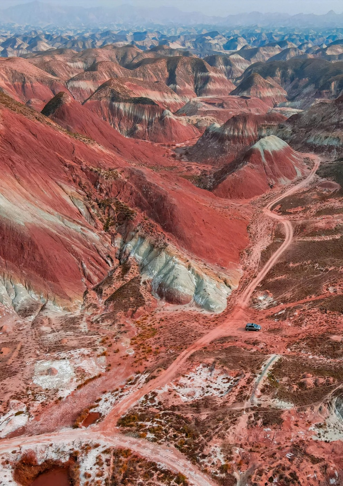
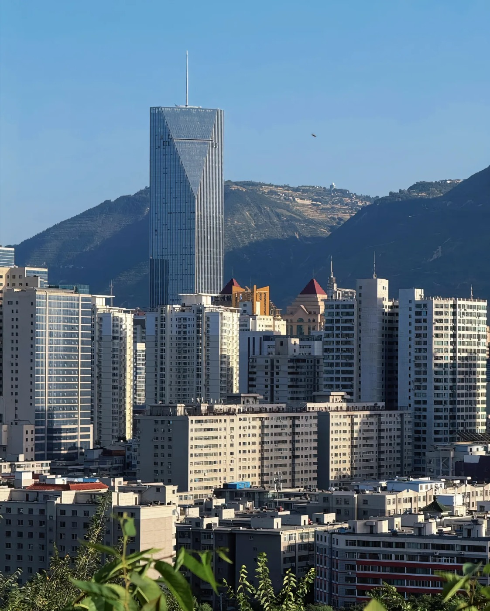
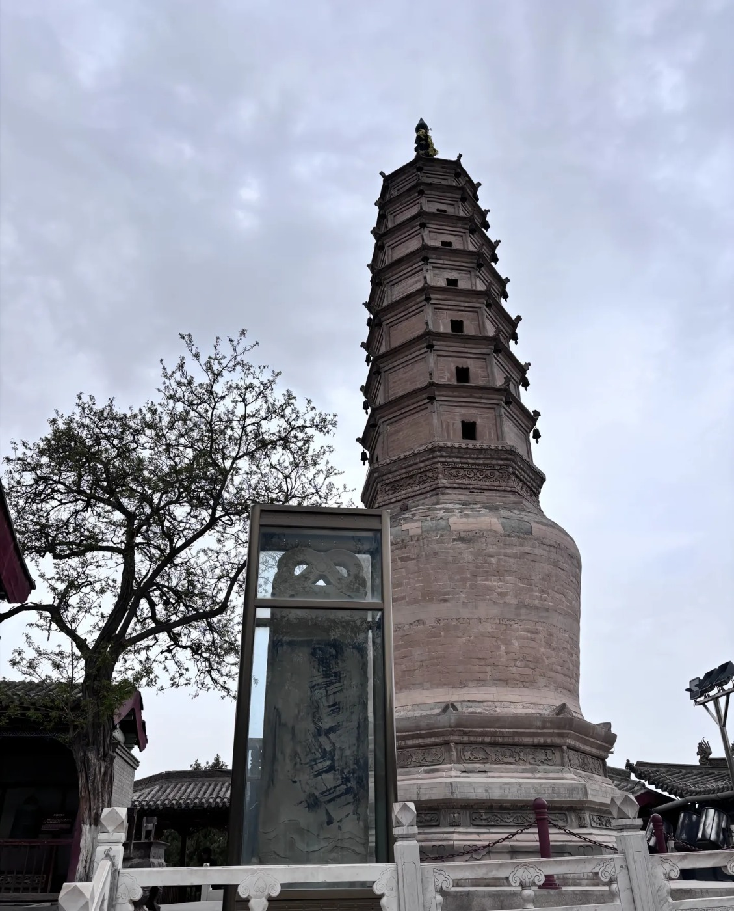

| 指标 | 数值 | 口径 | 来源 | 置信 | 用于推演 |
|---|

信息软件业增速全城第一（+15.2%），"东数西算"枢纽核心落于此地，数据中心从 32 个、4.9 万架起步加速扩张。
60+ 已 103 万占两成三，132 个幸福食堂月供 35 万人次，医养结合 100%。顺着老年人口长大，几乎不用赌。
夜游黄河成顶流 IP，入境游客 +54.5%。增速逐渐贴近人口天花板，转向内容与体验升级、客单价提升。

健康档案、票务、客流等大量个人数据集中流转，一旦泄露或被滥用，后果叠加且难以追责。更隐蔽的是，数据在多个系统间传导时，边界容易模糊——食堂点餐、慢病档案、医保等被同一平台打通后，谁能看、能看到多少，普通市民很难说清，也很难拒绝授权。
只要其中一环失守，比如机房老鼠或运维权限外泄，可能一次就让成千上万人的健康与行踪暴露，且责任散落在开发商、运营方与外包商之间，追责往往不了了之。
老年、低收入等边缘群体，可能在服务推荐与资源分配中被数据稀疏与模型偏差所忽略。数据里"看不清楚"的人群往往最需要照顾——他们外卖、定位、评论都少，样本不足，模型就猜不准。
久而久之容易形成"越被服务越被服务、越被忽略越被忽略"的循环，智能反而把公共服务原有的落差放大。
一座城市的运行过度依赖算力与网络，一旦中断，医疗、通勤、文旅等环节牵一发动全身。停电、断网、机房故障这类小概率事件，在城市高度数字化后会成倍放大。
更令人担心的是"系统瘫痪就没人会做"：人工兜底流程越来越生疏，一旦机器靠不住，连最简单的排班、挂号和调度都可能卡壳。